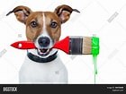
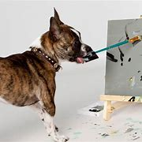
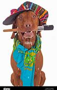
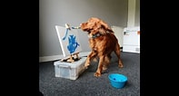
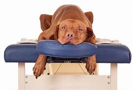
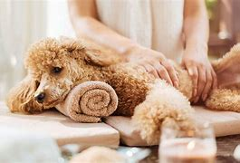
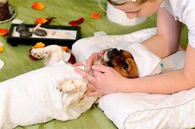
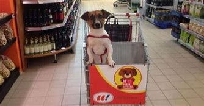
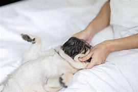

Welcome to the Betsy shop where all of your pet needs are met!
Upon visiting several pet shops, I noticed that there was something missing from online and in person stores. It was a space for pawrents to enjoy activities with their pets while shopping. I created Esme's Betsy Shop for parents to enjoy painting, cooking and baking classes, shopping and dining together in one space, the full experience. I have an Australian Cattledog who is very active. I have always wanted to take her to places with me but there were few places she was allowed to be in. Betsy shop carries food for parents and dogs, massages and rubs as well as a display of all artwork created by our customers.
        